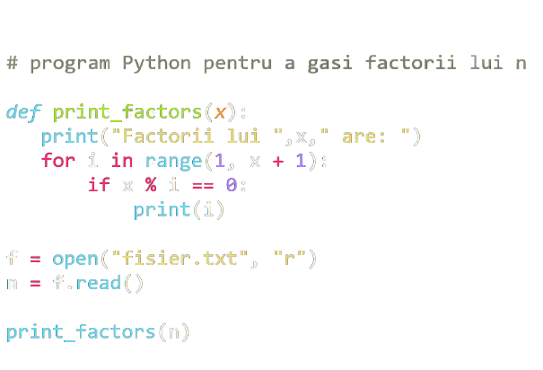
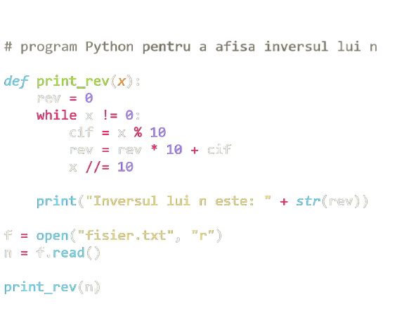
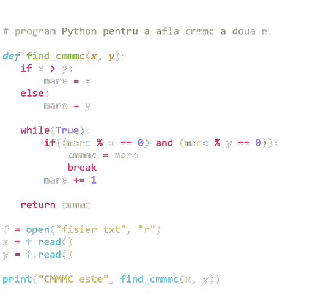

<body>
</body>
<html>
</html>
<h2>
</h2>
<p>
</p>
Exemple de cod Python



Limbajul Python
Python este un limbaj de programare avansat care este interpretat,
orientat pe obiecte și construit pe o semantică flexibilă și robustă.
Cine îl folosește?
- Profesii și industrii:
-
Dezvoltatori Python, ingineri software, dezvoltatori back-end, programatori Python
-
Folosit de angajatori în tehnologia informației, inginerie, servicii
profesionale și proiectare
- Organizații majore: Google, Pinterest, Instagram, YouTube,
DropBox, NASA, ESRI
- Specializări:
Dezvoltare web și Internet (cadre, micro-cadre și sisteme avansate de gestionare a conținutului);
calcul științific și numeric; interfețe grafice de utilizator pentru desktop (GUI)
Ce face ca învățarea lui să fie importantă?
-
Python vă permite să lucrați rapid pentru a integra sistemele ca
limbaj de scriptare sau lipici. Este potrivit și pentru dezvoltarea
rapidă a aplicațiilor (RAD).
-
Jocul Civilization 4 are toată logica sa interioară, inclusiv AI,
implementată în Python.
-
NASA folosește Python în sistemul său de planificare integrat ca limbaj de script standard.
-
Caracteristici:
-
Simplu de învățat și ușor de citit
-
Framework-uri asociate pentru dezvoltarea aplicațiilor bazate pe web
-
Bibliotecă standard disponibilă în sursă sau binară pe platformele majore
De unde a început?
Python a fost dezvoltat la sfârșitul anilor 1980 la CWI din Olanda
și lansat pentru prima dată în public în 1991
de Guido van Rossum. Van Rossum este și în ziua de astăzi un lider al comunității
de dezvoltatori de software care lucrează la perfecționarea limbajul Python și
implementarea de bază a acestuia, CPython, scrisă în C.
Avantajele limbajului
-
Python pune accentul pe curățenia și simplitatea codului, iar sintaxa sa le
permite dezvoltatorilor să exprime unele idei programatice într-o manieră mai
clară și mai concisă decât în alte limbaje de programare ca C
-
În ceea ce privește paradigma de programare, Python poate servi ca limbaj pentru
software de tipul object-oriented, dar permite și programarea imperativă,
funcțională sau procedurală.
-
Sistemul de tipizare este dinamic iar administrarea memoriei decurge automat prin
intermediul unui serviciu „gunoier” (garbage collector).
-
Existența unei ample biblioteci standard de metode